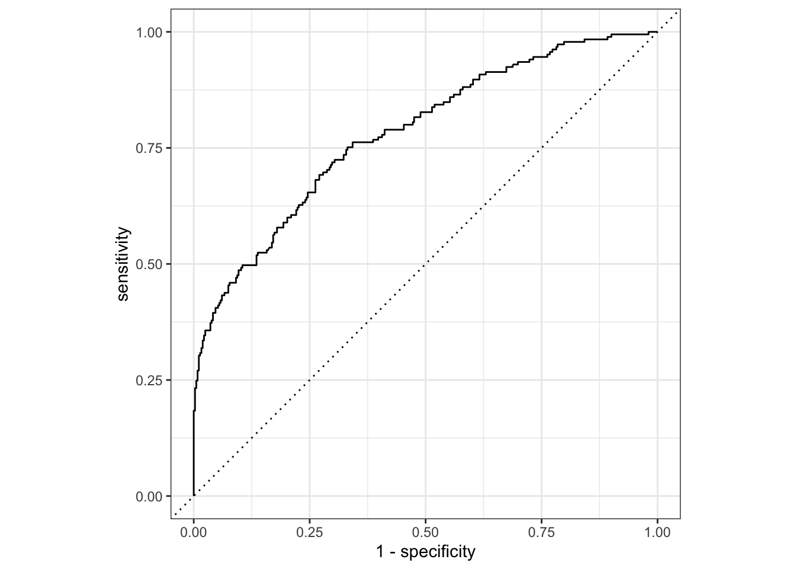

library(tidymodels)
library(tidyverse)
library(here)
library(dotwhisker)Model Evaluation
Library packages
Load Data
symptoms_fit <- readRDS(here("fluanalysis/data/processed_data/symptoms_clean.RDS"))
colnames(symptoms_fit) #quick look at data [1] "SwollenLymphNodes" "ChestCongestion" "ChillsSweats"
[4] "NasalCongestion" "CoughYN" "Sneeze"
[7] "Fatigue" "SubjectiveFever" "Headache"
[10] "Weakness" "WeaknessYN" "CoughIntensity"
[13] "CoughYN2" "Myalgia" "MyalgiaYN"
[16] "RunnyNose" "AbPain" "ChestPain"
[19] "Diarrhea" "EyePn" "Insomnia"
[22] "ItchyEye" "Nausea" "EarPn"
[25] "Hearing" "Pharyngitis" "Breathless"
[28] "ToothPn" "Vision" "Vomit"
[31] "Wheeze" "BodyTemp" Data Split
data_split <- initial_split(symptoms_fit, prop = 3/4) # 75% of data goes into training set
train_data <- training(data_split)
test_data <- testing(data_split)Model 1 fitting: all variables to predict nausea
Define the model: logistic regression
log_mod <- logistic_reg() %>% #model type is logistic regression
set_engine("glm") #engine set to generalized linear modelI am using a logistic regression here because the outcome of interest (Nausea Y/N) is categorical
Create recipe
recipe_nausea <- recipe(Nausea ~., data = train_data)Nausea is the outcome and all other variables are predictors
Create workflow: combine model definition and recipe
nausea_log_wf <- workflow() %>%
add_model(log_mod) %>% #model definition
add_recipe(recipe_nausea) #model recipeThis will run a logistic regression on the flu data, predicting nausea using all other variables that we kept.
Model fitting
nausea_fit <- nausea_log_wf %>%
fit(data = train_data)
nausea_fit %>% extract_fit_parsnip() %>%
tidy()# A tibble: 38 × 5
term estimate std.error statistic p.value
<chr> <dbl> <dbl> <dbl> <dbl>
1 (Intercept) -2.40 8.84 -0.271 0.786
2 SwollenLymphNodesYes -0.250 0.233 -1.07 0.284
3 ChestCongestionYes 0.178 0.252 0.709 0.478
4 ChillsSweatsYes 0.390 0.333 1.17 0.243
5 NasalCongestionYes 0.607 0.294 2.06 0.0392
6 CoughYNYes -0.496 0.610 -0.813 0.416
7 SneezeYes 0.151 0.243 0.623 0.534
8 FatigueYes 0.0852 0.442 0.193 0.847
9 SubjectiveFeverYes -0.0701 0.261 -0.268 0.789
10 HeadacheYes 0.659 0.357 1.85 0.0648
# … with 28 more rowsModel assessment on training data: ROC curve
set.seed(626)
nausea_aug_test <- augment(nausea_fit, train_data)Warning in predict.lm(object, newdata, se.fit, scale = 1, type = if (type == :
prediction from a rank-deficient fit may be misleading
Warning in predict.lm(object, newdata, se.fit, scale = 1, type = if (type == :
prediction from a rank-deficient fit may be misleadingnausea_aug_test %>%
roc_curve(truth = Nausea, .pred_Yes, event_level = "second") %>%
autoplot()Warning: Returning more (or less) than 1 row per `summarise()` group was deprecated in
dplyr 1.1.0.
ℹ Please use `reframe()` instead.
ℹ When switching from `summarise()` to `reframe()`, remember that `reframe()`
always returns an ungrouped data frame and adjust accordingly.
ℹ The deprecated feature was likely used in the yardstick package.
Please report the issue at <]8;;https://github.com/tidymodels/yardstick/issueshttps://github.com/tidymodels/yardstick/issues]8;;>.
nausea_aug_test %>% roc_auc(truth = Nausea, .pred_Yes,
event_level = "second")# A tibble: 1 × 3
.metric .estimator .estimate
<chr> <chr> <dbl>
1 roc_auc binary 0.785ROC-AUC is ok
Model assessment on testing data: ROC curve
set.seed(626)
nausea_fit_test <- nausea_log_wf %>%
fit(data = test_data)
nausea_fit_test %>% extract_fit_parsnip() %>%
tidy()# A tibble: 38 × 5
term estimate std.error statistic p.value
<chr> <dbl> <dbl> <dbl> <dbl>
1 (Intercept) 7.27 21.8 0.334 0.739
2 SwollenLymphNodesYes -0.0702 0.477 -0.147 0.883
3 ChestCongestionYes 0.408 0.488 0.836 0.403
4 ChillsSweatsYes -0.0467 0.715 -0.0653 0.948
5 NasalCongestionYes 0.0512 0.645 0.0793 0.937
6 CoughYNYes 0.924 1.24 0.743 0.457
7 SneezeYes 0.445 0.552 0.806 0.420
8 FatigueYes 0.972 0.878 1.11 0.269
9 SubjectiveFeverYes 1.47 0.609 2.41 0.0161
10 HeadacheYes -0.408 0.591 -0.690 0.490
# … with 28 more rowsnausea_aug_test2 <- augment(nausea_fit_test, test_data)Warning in predict.lm(object, newdata, se.fit, scale = 1, type = if (type == :
prediction from a rank-deficient fit may be misleading
Warning in predict.lm(object, newdata, se.fit, scale = 1, type = if (type == :
prediction from a rank-deficient fit may be misleadingnausea_aug_test2 %>%
roc_curve(truth = Nausea, .pred_Yes, event_level = "second") %>%
autoplot()nausea_aug_test2 %>% roc_auc(truth = Nausea, .pred_Yes,
event_level = "second")# A tibble: 1 × 3
.metric .estimator .estimate
<chr> <chr> <dbl>
1 roc_auc binary 0.857The testing data out-performed the training set
Model 2 fitting: runny nose to predict nausea
Create new recipe and workflow
recipe_nausea2 <- recipe(Nausea ~RunnyNose, data = train_data)
nausea_log_wf2 <- workflow() %>%
add_model(log_mod) %>% #model definition, use the same as Model 1
add_recipe(recipe_nausea2) #model recipeModel fitting
nausea_fit2 <- nausea_log_wf2 %>%
fit(data = train_data)
nausea_fit2 %>% extract_fit_parsnip() %>%
tidy()# A tibble: 2 × 5
term estimate std.error statistic p.value
<chr> <dbl> <dbl> <dbl> <dbl>
1 (Intercept) -0.667 0.162 -4.13 0.0000364
2 RunnyNoseYes 0.0758 0.194 0.391 0.696 Model assessment on training data
set.seed(626)
nausea_aug_test2 <- augment(nausea_fit2, train_data)
nausea_aug_test2 %>%
roc_curve(truth = Nausea, .pred_Yes, event_level = "second") %>%
autoplot()nausea_aug_test2 %>% roc_auc(truth = Nausea, .pred_Yes,
event_level = "second")# A tibble: 1 × 3
.metric .estimator .estimate
<chr> <chr> <dbl>
1 roc_auc binary 0.508The ROC-AUC here is lower than Model 1
Model assessment on testing data
set.seed(626)
nausea_fit_test3 <- nausea_log_wf2 %>%
fit(data = test_data)
nausea_fit_test3 %>% extract_fit_parsnip() %>%
tidy()# A tibble: 2 × 5
term estimate std.error statistic p.value
<chr> <dbl> <dbl> <dbl> <dbl>
1 (Intercept) -0.619 0.331 -1.87 0.0618
2 RunnyNoseYes -0.0324 0.375 -0.0864 0.931 nausea_aug_test3 <- augment(nausea_fit_test3, test_data)
nausea_aug_test3 %>%
roc_curve(truth = Nausea, .pred_Yes, event_level = "second") %>%
autoplot()
nausea_aug_test3 %>% roc_auc(truth = Nausea, .pred_Yes,
event_level = "second")# A tibble: 1 × 3
.metric .estimator .estimate
<chr> <chr> <dbl>
1 roc_auc binary 0.503The testing data is no different. Runny nose is likely not a good predictor of body temp.